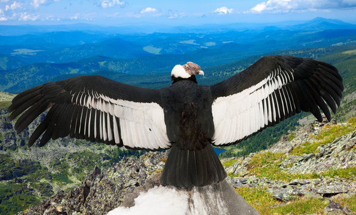

Especies Emblemáticas de Colombia
Vertebrados
Los vertebrados son animales que poseen una columna vertebral. En Colombia, este grupo incluye mamíferos como el jaguar y aves como el cóndor de los Andes.
Invertebrados
Los invertebrados son animales que no tienen columna vertebral. Ejemplos incluyen insectos, arañas y mariposas endémicas de Colombia.
Plantas

Colombia es hogar de una impresionante diversidad de plantas, desde orquídeas hasta árboles como el guayacán, que se encuentran tanto en la selva amazónica como en los páramos.
Líquenes
Los líquenes son organismos formados por una simbiosis entre hongos y algas, y son vitales para los ecosistemas, indicando la calidad del aire.
Algas
Las algas en Colombia se encuentran principalmente en sus costas y cuerpos de agua dulce. Son fundamentales para la producción de oxígeno en el ambiente acuático.
Hongos
Los hongos son esenciales para el reciclaje de nutrientes en los ecosistemas. En Colombia se pueden encontrar especies de hongos que habitan en bosques lluviosos y montañas.